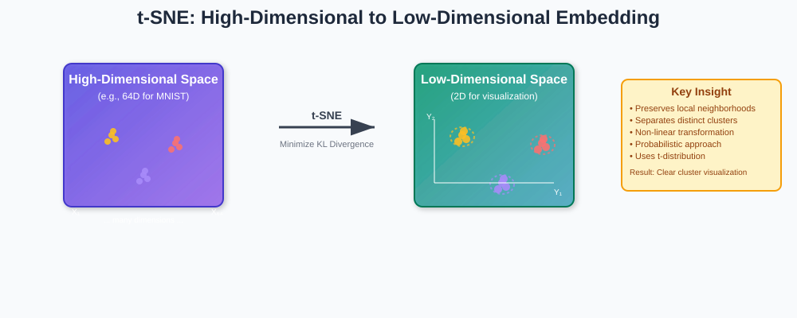
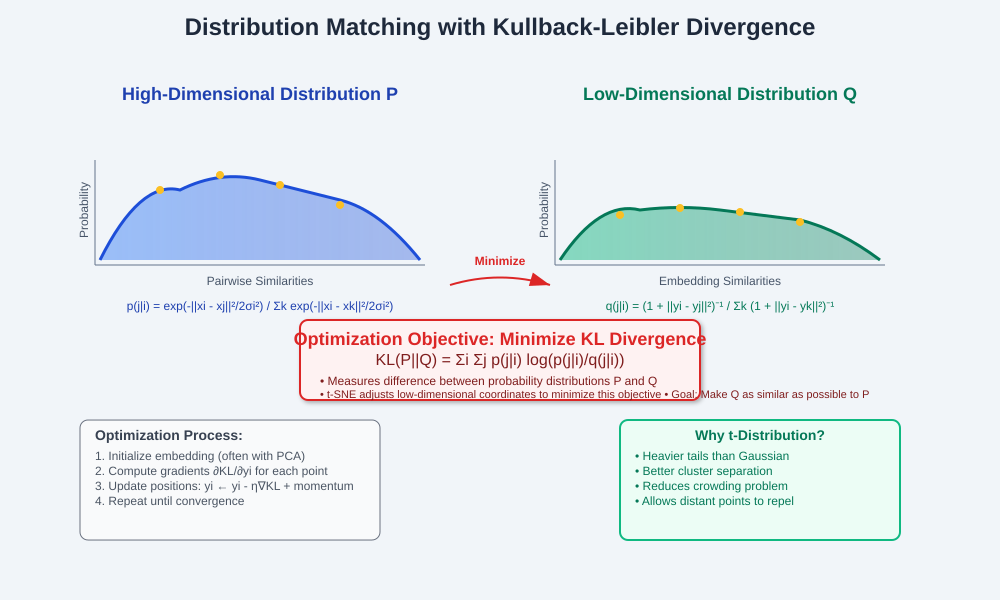
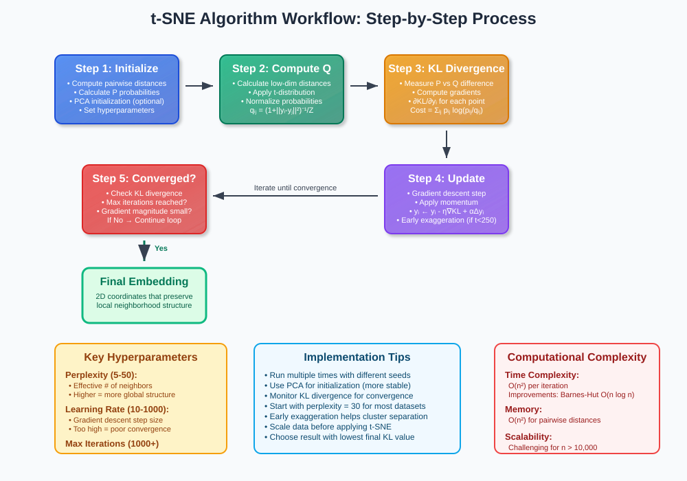
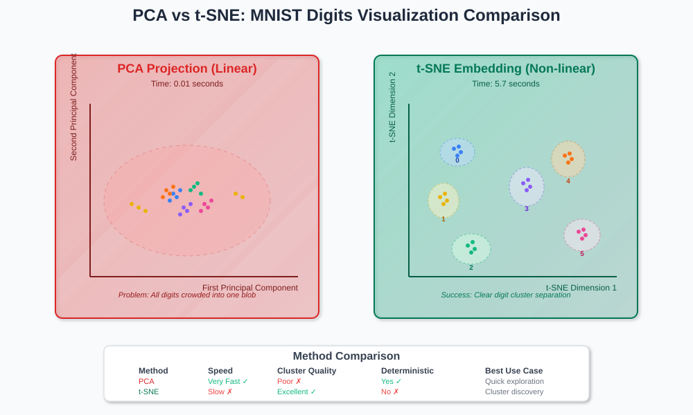
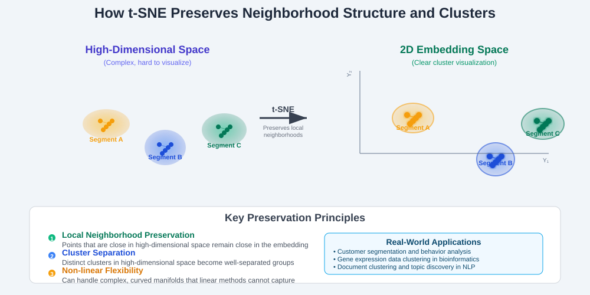

t-distributed Stochastic Neighbor Embedding (t-SNE)

📚 Quick Navigation
- 🎯 Overview
- 🔬 Mathematical Foundation
- ⚙️ Algorithm Workflow
- 🆚 PCA vs t-SNE Comparison
- 📊 MNIST Case Study
- 💡 Advantages and Limitations
- 🛠️ Implementation Guidelines
- 📖 References & Further Reading
🎯 Overview
t-distributed Stochastic Neighbor Embedding (t-SNE) is a powerful non-linear dimensionality reduction technique designed for data visualization and cluster discovery. Unlike linear methods such as PCA, t-SNE excels at preserving local neighborhood structures while revealing hidden clusters in high-dimensional data.

Key Characteristics
- Probabilistic Approach: Models data points as probability distributions in both high and low-dimensional spaces
- Non-linear Embedding: Captures complex, non-linear relationships in data
- Cluster Preservation: Maintains local neighborhoods while separating distinct clusters
- Visualization Excellence: Particularly effective for 2D and 3D visualizations
Core Principle
t-SNE works by finding an embedding that makes the high-dimensional sample distribution as similar as possible to the low-dimensional sample distribution, using Kullback-Leibler (KL) divergence as the similarity metric.
🔬 Mathematical Foundation
Probability Distribution Modeling
t-SNE models the similarity between data points using conditional probabilities:
High-dimensional space (input):
Low-dimensional space (embedding):
Objective Function
The algorithm minimizes the Kullback-Leibler divergence between P and Q:

Why t-Distribution?
The t-distribution (with one degree of freedom) in the low-dimensional space provides: - Heavier tails: Better separation of clusters - Reduced crowding: Prevents points from being compressed into a single blob - Enhanced visualization: Clearer cluster boundaries
⚙️ Algorithm Workflow

Step-by-Step Process
- Initialization
- Compute pairwise similarities in high-dimensional space
- Initialize low-dimensional embedding (often using PCA)
-
Set hyperparameters (perplexity, learning rate, iterations)
-
Optimization Loop
- Compute probabilities in low-dimensional space
- Calculate KL divergence gradient
- Update embedding coordinates using gradient descent
-
Apply momentum for faster convergence
-
Convergence
- Monitor KL divergence value
- Continue until convergence or maximum iterations reached
- Select best result from multiple runs
Key Hyperparameters
| Parameter | Description | Typical Range |
|---|---|---|
| Perplexity | Effective number of local neighbors | 5-50 |
| Learning Rate | Step size for gradient descent | 10-1000 |
| Iterations | Number of optimization steps | 1000-5000 |
| Early Exaggeration | Factor to separate clusters early | 4-12 |
🆚 PCA vs t-SNE Comparison

Fundamental Differences
| Aspect | PCA | t-SNE |
|---|---|---|
| Method | Linear projection | Non-linear embedding |
| Speed | Very fast (0.01s) | Slower (5-10s) |
| Determinism | Deterministic | Stochastic (initialization-dependent) |
| Global Structure | Preserves global variance | Focuses on local neighborhoods |
| Cluster Separation | Often creates "blobs" | Excellent cluster separation |
When to Use Each Method
Choose PCA when: - Quick exploration and outlier detection needed - Global data structure is more important - Computational resources are limited - Interpretable linear combinations are required
Choose t-SNE when: - Discovering hidden clusters is the priority - Visualization quality is paramount - Non-linear relationships are suspected - Computational time is not a constraint
📊 MNIST Case Study
Dataset Overview
The MNIST handwritten digits dataset provides an excellent demonstration of t-SNE's capabilities:
- Size: 1,800 images (180 per digit, 0-9)
- Dimensions: 8×8 grid = 64 features per image
- Task: Visualize digit clusters in 2D space
Experimental Setup
Input: \(x_1, ..., x_n \in \mathbb{R}^{64}\) (grayscale pixel values)
Output: \(y_1, ..., y_n \in \mathbb{R}^2\) (2D coordinates for visualization)
Results Analysis
PCA Results: - Creates a single large blob with limited cluster separation - Number "1" shows highest variance along first principal component - Fast computation but poor cluster visualization
t-SNE Results: - Clear separation of digit clusters (0s, 1s, 2s, etc.) - Each digit type forms distinct, well-separated groups - Excellent cluster preservation without prior knowledge of labels

Customer Segmentation Applications
This same principle applies to business applications: - Input: Customer behavioral data (purchasing history, demographics) - Output: Customer segments for targeted marketing - Benefit: Discover hidden customer groups without predefined categories
💡 Advantages and Limitations
✅ Advantages
Superior Cluster Discovery - Reveals hidden patterns in complex datasets - Maintains local neighborhood relationships - Excellent for exploratory data analysis
Visualization Excellence - Produces highly interpretable 2D/3D plots - Clear separation of distinct groups - Intuitive understanding of data structure
Versatile Applications - Works across domains: biology, marketing, NLP, computer vision - Handles various data types and scales - Robust to noise and outliers
❌ Limitations
Computational Complexity - Quadratic time complexity: O(n²) - Memory intensive for large datasets - Requires multiple runs for stability
Stochastic Nature - Results vary with different initializations - Requires careful hyperparameter tuning - Non-deterministic outputs
Interpretability Challenges - Distances in low-dimensional space may not preserve global relationships - Cluster sizes can be misleading - No direct inverse transformation
Best Practices
- Start with PCA for initial exploration
- Run multiple times and select best result (lowest KL divergence)
- Experiment with perplexity values for different dataset sizes
- Use PCA initialization for better stability
- Validate results with domain knowledge
🛠️ Implementation Guidelines
Python Implementation
from sklearn.manifold import TSNE
from sklearn.decomposition import PCA
import numpy as np
import matplotlib.pyplot as plt
# Basic t-SNE implementation
def run_tsne(X, n_components=2, perplexity=30, random_state=42):
"""
Apply t-SNE dimensionality reduction
Parameters:
- X: High-dimensional data
- n_components: Target dimensions (typically 2 or 3)
- perplexity: Number of nearest neighbors
- random_state: For reproducibility
"""
# Initialize with PCA for stability
pca_init = PCA(n_components=n_components).fit_transform(X)
# Apply t-SNE
tsne = TSNE(
n_components=n_components,
perplexity=perplexity,
random_state=random_state,
init='pca',
learning_rate='auto'
)
return tsne.fit_transform(X)
# Comparison with PCA
def compare_methods(X, labels=None):
"""Compare PCA and t-SNE visualizations"""
# PCA
pca = PCA(n_components=2)
X_pca = pca.fit_transform(X)
# t-SNE
X_tsne = run_tsne(X)
# Plotting
fig, (ax1, ax2) = plt.subplots(1, 2, figsize=(12, 5))
ax1.scatter(X_pca[:, 0], X_pca[:, 1], c=labels, alpha=0.7)
ax1.set_title('PCA Projection')
ax2.scatter(X_tsne[:, 0], X_tsne[:, 1], c=labels, alpha=0.7)
ax2.set_title('t-SNE Embedding')
plt.tight_layout()
plt.show()
Hyperparameter Tuning Guidelines
Perplexity Selection: - Small datasets (n < 1000): perplexity = 5-30 - Medium datasets (1000 < n < 10000): perplexity = 30-50 - Large datasets (n > 10000): perplexity = 50-100
Learning Rate: - Too low: slow convergence - Too high: unstable optimization - Recommended: n/12 where n is sample size
Iterations: - Minimum: 1000 iterations - Complex datasets: 3000-5000 iterations - Monitor KL divergence for convergence
📖 References & Further Reading
📚 Core Papers
-
Van der Maaten, L., & Hinton, G. (2008) Visualizing Data using t-SNE Journal of Machine Learning Research, 9, 2579-2605 📄 Paper
-
Van der Maaten, L. (2014) Accelerating t-SNE using Tree-Based Algorithms Journal of Machine Learning Research, 15, 3221-3245 📄 arXiv
🔧 Implementation Resources
-
Scikit-learn Documentation t-SNE Implementation and Examples 🔗 Documentation
-
Multicore-TSNE Parallel t-SNE implementation for large datasets 💻 GitHub
📊 Visualization and Analysis
-
Wattenberg, M., et al. (2016) How to Use t-SNE Effectively Distill Journal 🌐 Interactive Article
-
Kobak, D., & Berens, P. (2019) The art of using t-SNE for single-cell transcriptomics Nature Communications, 10, 5416 📄 Paper
🧠 Advanced Topics
-
Linderman, G. C., et al. (2019) Fast interpolation-based t-SNE for improved visualization of single-cell RNA-seq data Nature Methods, 16, 243-245 📄 Paper
-
Policar, P. G., et al. (2019) openTSNE: a modular Python library for t-SNE dimensionality reduction and embedding bioRxiv preprint 💻 GitHub
💡 Pro Tip: Always validate t-SNE results with domain expertise and complementary analysis methods. The beautiful visualizations should guide further investigation, not replace rigorous statistical analysis.